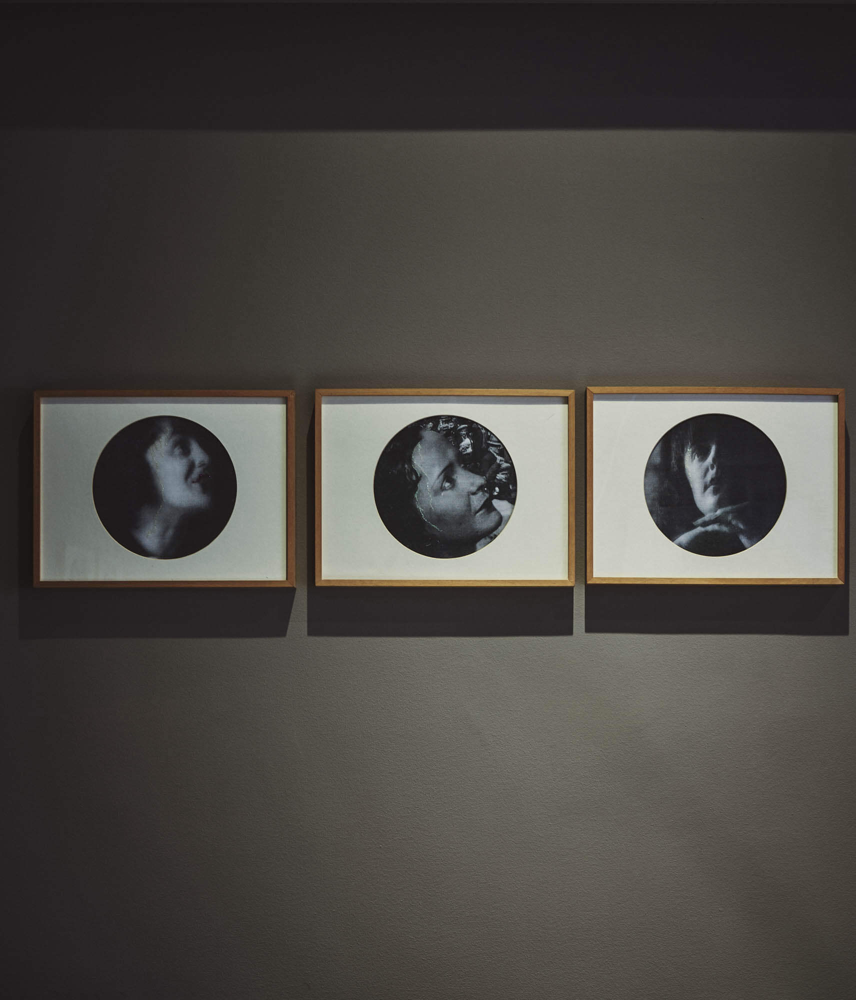
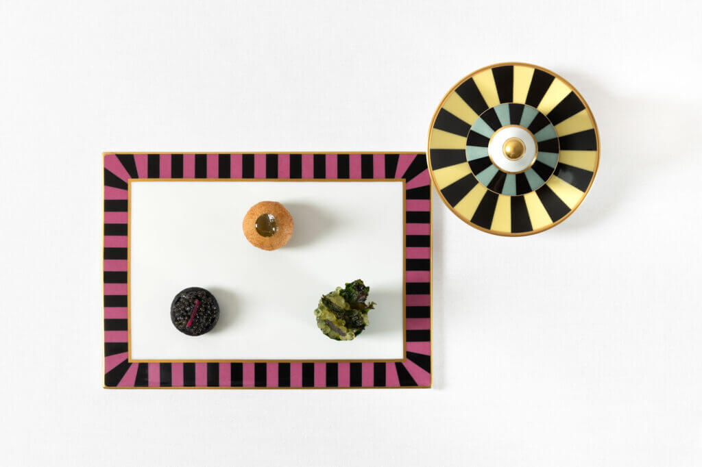
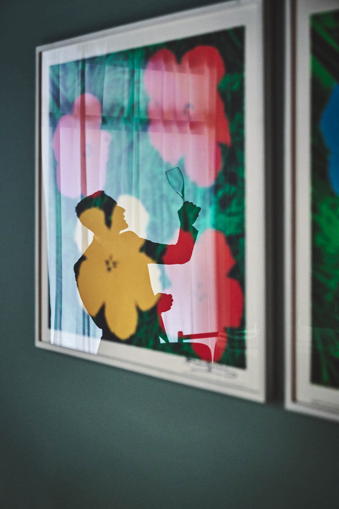
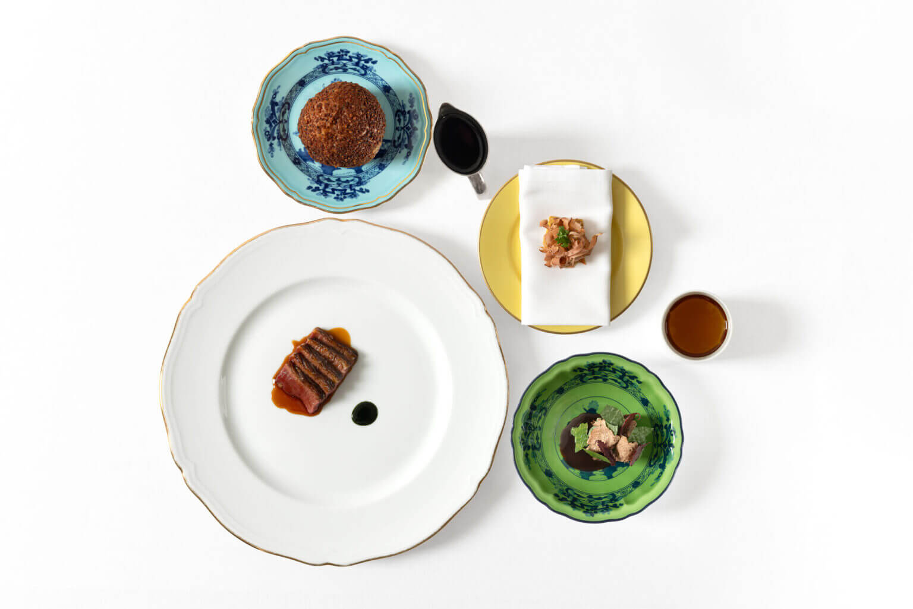
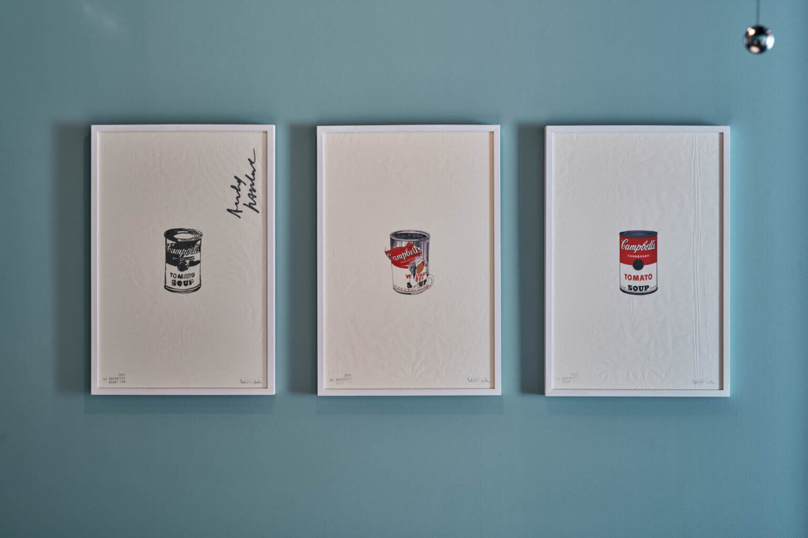

Chef Tingeling är mer än en restaurang – det är ett laboratorium för idéer. Vi ser på det svenska köket med öppna ögon: vi respekterar traditionerna, men låter kreativitet och nyfikenhet forma framtiden. Varje rätt är en bro mellan det välbekanta och det oväntade – tradition i utveckling.



Utforska vår meny, boka ett bord för en oförglömlig matupplevelse, eller lär känna Mr. Strid och hans kulinariska vision. På Chef Tingeling är varje besök en chans att uppleva det svenska kökets rika arv och spännande framtid.


